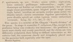
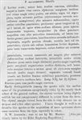

Click on images to enlarge
{kind=link}

Trachymela squirescensis, description
{kind=link}

Trachymela squirescensis, redescription
Name
Trachymela squirescensis (Blackburn, 1896)
Type specimen
Not examined.
Original description
[Descriptions are shown in figures, translated from Latin using ChatGPT]
Original Description (1893):
Oval; rather dull; black-pitchy; labrum, antennae, and legs reddish; head and prothorax rather strongly and fairly closely punctured, the punctures on the latter coarser toward the sides; this about a little more than twice as wide as long, the sides rather strongly rounded, behind scarcely half as wide as in front; elytra very coarsely rugulose-punctate, in the apical half rather densely (toward the apex very densely) verrucose.
Length 3½–4 lines (7.8-9 mm); width 2–2⅔ lines (4.5-6 mm).
Redescription (1896):
Male. Slightly oval; rather narrow; moderately convex, the greatest height (seen from the side) situated near the middle of the elytral margin (or even slightly further back); fairly shining; black or black-pitchy, the head, antennae, and legs (and in some specimens the elytral verrucae) more or less reddish.
Head densely and finely punctured.
Prothorax broader than long in the ratio about 2¼ : 1, widened from the apex to beyond the middle, transversely impressed behind the anterior margin, unequally punctured (larger punctures on the disc mixed with smaller ones), toward the sides strongly coarsely punctured; sides less rounded and not at all flattened; posterior angles obtuse.
Scutellum smooth or scarcely punctured.
Elytra slightly depressed beneath the humeral callus, transversely impressed behind the base; densely and strongly, somewhat in rows, punctured; furnished with numerous rather large verrucae, more or less reddish, irregularly distributed; interstices anteriorly smoother (in the female more distinctly so than in the male) and posteriorly more rugulose; marginal portion extremely narrow and only moderately distinct; inner margin of the humeral callus much farther from the suture than from the lateral margin of the elytra.
Basal ventral segment punctured (in the male rather strongly, in the female more finely).
Median concave portion of the prosternum broad.
Length 3–3¾ lines (6.75-8.4 mm); width 2⅕–2⅖ lines (4.95-5.4 mm).
Female slightly more convex than the male.
Notes
Note the different values for the length ranges in the description and redescription, with the upper end of the range about 0.5 mm lower despite the additional specimens he had on hand.
The type locality is Mt Squires, just north of the Great Victoria Desert in Western Australia. In his re-description of the species (Blackburn, 1896), he gives the locality as N.W. Australia. Selman identified a specimen of Ta14 from Blackdown Tablelands in Central Queensland as this species (B.J. Selman, pers. comm. 1979). It is possible that T. squirescensis has a very large distribution over the drier parts of central Australia. However, northern Australia has a large number of superficially similar species in the solivagus-group of species, and it is just as likely that this is not Ta14.
References
Blackburn, T. 1893, "Scientific results of the Elder exploring expedition: Coleoptera (continued)", Transactions of the Royal Society of South Australia, vol. 16, 177–202 (page 202).
Blackburn, T. 1896, "Revision of the genus Paropsis. Part I", Proceedings of the Linnean Society of New South Wales, vol. 21, no. 4, 637-693 (page 647).
Copyright © 2026. All rights reserved.